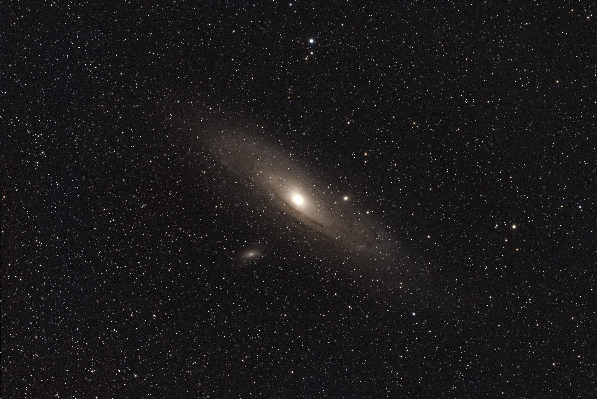

Behind the photograph · 03
Andromeda
A galaxy takes shape. Slide between my FITS preview and the finished Andromeda photograph.
Inside Andromeda · Explore the details →


FITS previewFinished imageMove the slider, or use the arrow keys, to reveal each version.
Open finished photographOpen FITS preview
Behind the image
Revealing the galaxy.
My Andromeda photograph, shown alongside a preview of the FITS file. Follow the dust lanes through both versions and see how the processing reveals structure around the bright core.
The preview has a linked brightness stretch across all three colour channels. The finished photograph is my existing gallery image.
A small record of learning: the same field of stars, seen at two stages of the journey.